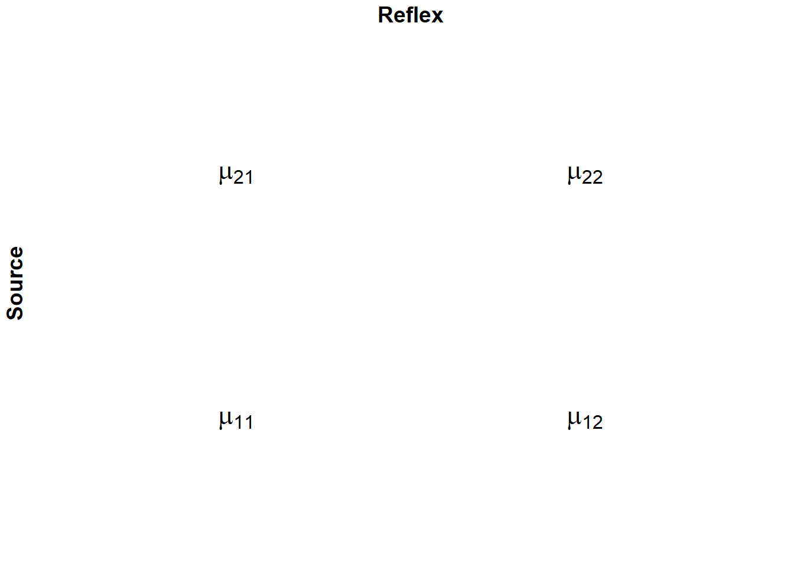

# Charger le fichier CSV
robtech <- read.csv("C:/Users/Fatou/OneDrive - HEC Montréal/PROJET SUPERVISE/THEME 4/data/RobTech_ANOVA_2.csv",sep=";", header=TRUE)
robtech$source<-as.factor(robtech$source)
robtech$reflex<-as.factor(robtech$reflex)Thème 4: ANOVA à deux facteur
1 Partie 1: ANOVA à deux facteurs controlés cellules équilibrées
1.1 ANOVA à deux facteurs contrôlés
Mise en situation
Pour promouvoir une marque de Robot culinaire haut de gamme, le responsable marketing de la compagnie « RobTech » veut évaluer l’effet de la source et du temps de réflexion (Reflex) sur l’efficacité d’une publicité de type « piecemeal » c.à.d. une publicité comparant la marque en question à une marque concurrente « attribut par attribut ».
Design de l’étude
120 sujets ont été assignés au hasard à un des quatre groupes de l’étude et, après avoir vu le message publicitaire, devaient répondre à un questionnaire pour mesurer l’évaluation de la marque cible (échelle de 1 à 15) et la crédibilité accordée au message publicitaire (échelle de 1 à 15).
Deux facteurs ont été manipulés pour créer les différents types de messages :
1) Source des informations du message (SOURCE) : - Selon la brochure d’information de la compagnie « RobTech » - Selon le magazine « Protégez vous » 2) Temps de réflexion accordé (REFLEX) : - Temps de réflexion court
- Temps de réflexion long
Les données
Le fichier des données simulées correspondant à cette étude se trouve dans le fichier « Robtech_ANOVA_2.csv ».
Variables
Après avoir visionné un des messages publicitaires (assignés aléatoirement), les participants devaient évaluer la marque cible et donner un score de crédibilité au message (sur une échelle de 1 à 15).
Source: 1=Brochure du manufacturier; 2= Magasine « Protégez-Vous ». Reflex: 1=court; 2=long Eval = Évaluation de la marque de robot Cred = Crédibilité du message
Ce plan d’expérience nous permet de définir 4 groupes (populations) et de comparer les 4 moyennes suivantes, pour chaque variable :

1.1.1 Résultats observés (échantillons): variable Crédibilite de la marque
library(dplyr)
# Calculer les statistiques descriptives (moyenne, écart-type, effectif)
robtech_stats <- robtech %>%
group_by(source, reflex) %>%
summarise(
Moyenne = mean(cred, na.rm = TRUE),
Écart_type = sd(cred, na.rm = TRUE),
N = n()
)
print(robtech_stats)# A tibble: 4 × 5
# Groups: source [2]
source reflex Moyenne Écart_type N
<fct> <fct> <dbl> <dbl> <int>
1 1 1 7.5 3.45 30
2 1 2 6.4 2.25 30
3 2 1 9.5 2.90 30
4 2 2 8.93 3.07 30library(ggplot2)
# Créer un graphique des moyennes marginales estimées
ggplot(robtech_stats, aes(x = source, y = Moyenne, group = reflex, color = reflex)) +
geom_point(size = 3) +
geom_line(size = 1) +
labs(
title = "Moyennes marginales estimées de crédibilité",
x = "Source",
y = "Moyenne estimée"
) +
theme_minimal()1.1.2 Résultats observés (échantillons): variable Évaluation de la marque
# Calculer les statistiques descriptives (moyenne, écart-type, effectif)
robtech_stats2 <- robtech %>%
group_by(source, reflex) %>%
summarise(
Moyenne = mean(eval, na.rm = TRUE),
Écart_type = sd(eval, na.rm = TRUE),
N = n()
)
print(robtech_stats2)# A tibble: 4 × 5
# Groups: source [2]
source reflex Moyenne Écart_type N
<fct> <fct> <dbl> <dbl> <int>
1 1 1 9.27 2.74 30
2 1 2 8.03 3.05 30
3 2 1 7.87 2.96 30
4 2 2 10.4 2.69 30library(ggplot2)
# Créer un graphique des moyennes marginales estimées
ggplot(robtech_stats2, aes(x = source, y = Moyenne, group = reflex, color = reflex)) +
geom_point(size = 3) +
geom_line(size = 1) +
labs(
title = "Moyennes marginales estimées de crédibilité",
x = "Source",
y = "Moyenne estimée"
) +
theme_minimal()1.2 Cadre théorique
Le but d’une ANOVA à deux facteurs est d’étudier comment et dans quelle mesure les niveaux des facteurs A et B influencent la moyenne d’une variable d’intérêt Y.
Y: variable dépendante quantitative.
2 facteurs: Facteur A avec a niveaux
Facteur B avec b niveaux
Le croisement des 2 facteurs crée a x b groupes
| Facteur.A | niveau.1 | niveau.2 | ... | niveau.b |
|---|---|---|---|---|
| niveau 1 | μ11 | μ12 | ... | μ1b |
| niveau 2 | μ21 | μ22 | ... | μ2b |
| ... | ... | ... | ... | ... |
| niveau a | μa1 | μa2 | ... | μab |
μij : moyenne de la variable Y pour le groupe correspondant au ième niveau du facteur A et au jème niveau du facteur B.
1.2.1 Échantillon
| Facteur.A | niveau.1 | niveau.2 | ... | niveau.b |
|---|---|---|---|---|
| niveau 1 | Y[111], Y[112], ..., Y[11n1] | Y[121], Y[122], ..., Y[12n12] | ... | Y[1b1], Y[1b2], ..., Y[1bn1b] |
| niveau 2 | Y[211], Y[212], ..., Y[21n21] | Y[221], Y[222], ..., Y[22n22] | ... | Y[2b1], Y[2b2], ..., Y[2bn2b] |
| ... | ... | ... | ... | ... |
| niveau a | Y[a11], Y[a12], ..., Y[a1na] | Y[a21], Y[a22], ..., Y[a2na2] | ... | Y[ab1], Y[ab2], ..., Y[abnab] |
ùêß_ùíäùíã:nombre d‚Äôobservations dans le groupe correspondant au i√®me niveau du facteur A et au j√®me niveau du facteur B (cellule (i,j)) . ùíÄ_ùíäùíãùíå: observation du k√®me sujet dans le groupe correspondant au i√®me niveau du facteur A et au j√®me niveau du facteur B.
1.3 ANOVA à deux facteurs controlés avec cellules équilibrées
L’utilisation des méthodes statistiques sont différentes selon que les données sont équilibrées ou non. Par données équilibrées, on entend un design ou plan d’expérience où chaque cellule (définissant un groupe) contient le même nombre d’observations.
Dans la mise en situation définie au début du cours, chaque cellule contient 30 observations.
Cas 1: Cellules équilibrées (tous les n_ij sont égaux)
| Facteur.A | niveau.1 | niveau.2 | ... | niveau.b | Moyenne.marginale.Facteur.A |
|---|---|---|---|---|---|
| niveau 1 | μ11 | μ21 | ... | μ1b | μ1• |
| niveau 2 | μ12 | μ22 | ... | μ2b | μ2• |
| ... | ... | ... | ... | ... | ... |
| niveau a | μa1 | μa2 | ... | μab | μa• |
| Moyenne marginale Facteur B | μ•1 | μ•2 | ... | μ•b | μ Moyenne globale |
\[ \mu_{i\bullet} = \frac{1}{b} \sum_{j=1}^{b} \mu_{ij} \] Moyenne marginale du niveau (i) du facteur A.
\[ \mu_{\bullet j} = \frac{1}{a} \sum_{i=1}^{a} \mu_{ij} \] Moyenne marginale du niveau (j) du facteur B.
\[ \mu = \frac{1}{ab} \sum_{i=1}^{a} \sum_{j=1}^{b} \mu_{ij} \] Moyenne globale (moyenne des moyennes).
| Source | Court | Long | Moyenne_Source |
|---|---|---|---|
| Brochure du manufacturier | 7.5 (n=30) | 6.4 (n=30) | 6.95 = (7.5+6.4)/2 |
| Protégez vous | 9.5 (n=30) | 8.93 (n=30) | 9.22 |
| Moyenne marginale Facteur Reflex | 8.5 = (7.5+9.5)/2 | 7.67 | 8.08 |
table_eval| Source | Court | Long | Moyenne_Source |
|---|---|---|---|
| Brochure du manufacturier | 9.27 (n=30) | 8.03 (n=30) | 8.67 = (9.27+8.03)/2 |
| Protégez vous | 7.87 (n=30) | 10.43 (n=30) | 9.15 |
| Moyenne marginale Facteur Reflex | 8.57 = (9.27+7.87)/2 | 9.23 | 8.9 |
1.3.1 Interaction entre les facteurs
On débute une ANOVA à deux facteurs ou plus par une analyse d’interaction entre les facteurs.
- S’il n’y a pas d’interaction entre 2 facteurs, la différence des moyennes entre 2 niveaux donnés d’un facteur demeure sensiblement la même peu importe le niveau de l’autre facteur et vice-versa.
Retour sur l’exemple: Variable ‘’Cred’’
# Moyennes estimées en fonction de Source
ggplot(robtech_stats, aes(x = source, y = Moyenne, group = reflex, color = reflex)) +
geom_point(size = 3) +
geom_line(size = 1) +
geom_errorbar(aes(ymin = Moyenne - Écart_type, ymax = Moyenne + Écart_type), width = 0.1, color = "red") +
labs(title = "Moyennes marginales estimées", x = "Source", y = "Moyenne estimée") +
theme_minimal()# Moyennes estimées en fonction de Reflex
ggplot(robtech_stats, aes(x = reflex, y = Moyenne, group = source, color = source)) +
geom_point(size = 3) +
geom_line(size = 1) +
geom_errorbar(aes(ymin = Moyenne - Écart_type, ymax = Moyenne + Écart_type), width = 0.1, color = "red") +
labs(title = "Moyennes marginales estimées", x = "Temps de réflexion", y = "Moyenne estimée") +
theme_minimal()- S’il y a interaction entre 2 facteurs, la différence des moyennes entre 2 niveaux donnés d’un facteur peut varier selon le niveau de l’autre facteur.
Retour sur l’exemple 2: Variable ‘’Eval’’
# Moyennes estimées en fonction de Source
ggplot(robtech_stats2, aes(x = source, y = Moyenne, group = reflex, color = reflex)) +
geom_point(size = 3) +
geom_line(size = 1) +
geom_errorbar(aes(ymin = Moyenne - Écart_type, ymax = Moyenne + Écart_type), width = 0.1, color = "red") +
labs(title = "Moyennes marginales estimées", x = "Source", y = "Moyenne estimée") +
theme_minimal()# Moyennes estimées en fonction de Reflex
ggplot(robtech_stats2, aes(x = reflex, y = Moyenne, group = source, color = source)) +
geom_point(size = 3) +
geom_line(size = 1) +
geom_errorbar(aes(ymin = Moyenne - Écart_type, ymax = Moyenne + Écart_type), width = 0.1, color = "red") +
labs(title = "Moyennes marginales estimées", x = "Temps de réflexion", y = "Moyenne estimée") +
theme_minimal()1.4 Hypothèses générales d’intérêt
- Existe-t-il une interaction entre les facteurs A et B ?
\[ H_{0AB} : \mu_{ij} - \mu_{im} - \mu_{lj} + \mu_{lm} = 0 \quad \text{pour tout } (i,j,l,m) \quad \text{(pas d'interaction)} \]
\[ H_{1AB} : \mu_{ij} - \mu_{im} - \mu_{lj} + \mu_{lm} \neq 0 \quad \text{pour au moins un } (i,j,l,m) \quad \text{(interaction)} \]
- Test sur l’effet global du facteur A
\[ H_{0A} : \mu_{1\bullet} = \mu_{2\bullet} = \cdots = \mu_{a\bullet} \]
\[ H_{1A} : \text{les } \mu_{i\bullet} \text{ ne sont pas tous égaux.} \]
(l’effet global du facteur A est significatif)
- Test sur l’effet global du facteur B
\[ H_{0B} : \mu_{\bullet 1} = \mu_{\bullet 2} = \cdots = \mu_{\bullet b} \]
\[ H_{1B} : \text{les } \mu_{\bullet j} \text{ ne sont pas tous égaux.} \]
(l’effet global du facteur B est significatif)
1.5 Méthodologie
On commence par tester s’il y a interaction (H0_AB)
Si on ne rejette pas l’hypothèse H0_AB (aucune interaction significative n’a été détectée), on pourra alors poursuivre l’analyse et tester les effets globaux H0_A et H0_B à partir du même tableau d’Anova (Tests of Between-Sujects Effects).
Si on rejette l’hypothèse H0_AB, alors l’interaction est significative (l’effet du facteur A n’est pas le même pour tous les niveaux du facteur B). Il ne servira à rien de tester les effets globaux H0A et H0B. On devra plutôt comparer les niveaux du facteur A à l’intérieur de chaque niveau du facteur B et vice-versa. Ce type d’effets est appelé « effet simple » et sera abordé plus loin.
L’analyse pourra par la suite être raffinée en procédant à des comparaisons multiples comme dans le cas de l’ANOVA à un facteur contrôlé.
1.5.1 Échantillons
| Facteur.A | niveau.1 | niveau.2 | ... | niveau.b | Moyenne.Facteur.A |
|---|---|---|---|---|---|
| niveau 1 | YÃÑ‚ÇÅ‚ÇÅ. | | YÃÑ‚ÇÇ‚ÇÅ. | | .. | | YÃÑ‚Çê‚ÇÅ. | | YÃÑ.‚ÇÅ. |
| niveau 2 | YÃÑ‚ÇÅ‚ÇÇ. | | YÃÑ‚ÇÇ‚ÇÇ. | | .. | | YÃÑ‚Çê‚ÇÇ. | | YÃÑ.‚ÇÇ. |
| ... | ... | ... | ... | ... | ... |
| niveau a | YÃÑ‚ÇÅb. | | YÃÑ‚ÇÇb. | | .. | | YÃÑ‚Çêb. | | YÃÑ.b. |
| Moyenne Facteur B | YÃÑ‚ÇÅ.. | | YÃÑ‚ÇÇ.. | | .. | | YÃÑ‚Çê.. | | YÃÑ... |
\[ \text{Estimé de l’effet global du niveau } i \text{ du facteur A :} \quad \overline{Y}_{i..} - \overline{Y}_{...} \]
\[ \text{Estimé de l’effet global du niveau } j \text{ du facteur B :} \quad \overline{Y}_{.j.} - \overline{Y}_{...} \]
\[ \text{Estimé de l’effet d’interaction entre le niveau } i \text{ du facteur A} \\ \text{et le niveau } j \text{ du facteur B :} \quad \overline{Y}_{ij.} - \overline{Y}_{i..} - \overline{Y}_{.j.} + \overline{Y}_{...} \]
1.5.2 Décomposition de la variabilité totale
La variabilité totale (SSc) observée peut être décomposée en 4 parties :
\[ SS_c = SS_A + SS_B + SS_{AB} + SS_e \]
# Créer un dataframe avec les formules et descriptions
df <- data.frame(
"Formule" = c(
"SS_A = nb Σ (Ȳ_i.. - Ȳ_...)²",
"SS_B = na Σ (Ȳ_.j. - Ȳ_...)²",
"SS_AB = n Σ Σ (Ȳ_ij. - Ȳ_i.. - Ȳ_.j. + Ȳ_...)²",
"SS_e = Σ Σ Σ (Y_ijk - Ȳ_ij.)²"
),
"Description" = c(
"Variabilité due aux différences entre les niveaux du facteur A",
"Variabilité due aux différences entre les niveaux du facteur B",
"Variabilité due aux interactions entre les niveaux du facteur A et ceux du facteur B",
"Variabilité résiduelle qui n’est pas expliquée par les facteurs et est due aux erreurs aléatoires"
)
)
# Afficher le tableau
kable(df, align = "c", caption = "Tableau des sommes des carrés") %>%
kable_styling(full_width = FALSE, bootstrap_options = c("striped", "hover")) %>%
row_spec(0, bold = TRUE, background = "#00CCFF", color = "black") | Formule | Description |
|---|---|
| SS_A = nb Σ (Ȳ_i.. - Ȳ_...)² | | Variabilité due aux différences entre les niveaux du facteur A |
| SS_B = na Σ (Ȳ_.j. - Ȳ_...)² | | Variabilité due aux différences entre les niveaux du facteur B |
| SS_AB = n Σ Σ (Ȳ_ij. - Ȳ_i.. - Ȳ_.j. + Ȳ_.. | )² | Variabilité due aux interactions entre les niveaux du facteur A et ceux du facteur B |
| SS_e = Σ Σ Σ (Y_ijk - Ȳ_ij.)² | | Variabilité résiduelle qui n’est pas expliquée par les facteurs et est due aux erreurs aléatoires |
1.6 Les tests d’hypothèses appropriées dans le contexte d’ANOVA à deux facteurs
\[ \text{Test sur l’interaction : basé sur la statistique } F = \frac{\frac{SS_{AB}}{(a-1)(b-1)}}{\frac{SS_e}{ab(n-1)}}. \]
\[ \text{Test sur l’effet global du facteur A : basé sur } F = \frac{\frac{SS_A}{(a-1)}}{\frac{SS_e}{ab(n-1)}}. \]
\[ \text{Test sur l’effet global du facteur B : basé sur } F = \frac{\frac{SS_B}{(b-1)}}{\frac{SS_e}{ab(n-1)}}. \]
1.7 Test d’interaction entre les facteurs
Existe-t-il une interaction significative entre le facteur source et reflex pour la variable crédibilité?
ùêª_0 :ùëñùëô ùëõ‚Ä≤ ùë¶ ùëé ùëùùëéùë† ùëë‚Ä≤ ùëñùëõùë°ùëíùëüùëéùëêùë°ùëñùëúùëõ ùëíùëõùë°ùëüùëí ùëôùëíùë† ùëìùëéùëêùë°ùëíùë¢ùëüùë†
ùêª_1 :ùëñùëô ùë¶ ùëé ùë¢ùëõùëí ùëñùëõùë°ùëíùëüùëéùëêùë°ùëñùëúùëõ ùëíùëõùë°ùëüùëí ùëôùëíùë† ùëìùëéùëêùë°ùëíùë¢ùëüùë†
library(car)
# Effectuer l'ANOVA avec interaction entre source et reflex
anova_source_reflex <- aov(cred ~ source * reflex, data = robtech)
# Afficher les résultats de l'ANOVA
summary(anova_source_reflex) Df Sum Sq Mean Sq F value Pr(>F)
source 1 154.1 154.13 17.701 5.12e-05 ***
reflex 1 20.8 20.83 2.393 0.125
source:reflex 1 2.1 2.13 0.245 0.622
Residuals 116 1010.1 8.71
---
Signif. codes: 0 '***' 0.001 '**' 0.01 '*' 0.05 '.' 0.1 ' ' 1P-value = 0.622 > niveau de signification (α) = 0.05. donc on ne rejette pas l’hypothèse nulle.
Au niveau de signification 5%, les données de nous fournissent pas assez de preuves pour conclure à une interaction statistiquement significative entre les facteurs.
On passe donc à l’analyse des effets globaux dans cette même table d’ANOVA.
1.8 Analyse fine des résultats lorsque l’interaction n’est pas significative
- Test de l’effet global du facteur Source:
ùêª_0 : ùúá_ùëèùëüùëúùëê‚Ñéùë¢ùëüùëí ùëëùë¢ ùëöùëéùëõùë¢ùëìùëéùëêùë°ùë¢ùëüùëñùëíùëü=ùúá_ùëùùëüùëúùë°ùëíùëîùëíùëß ùë£ùëúùë¢ùë† vs. ùêª_1 :ùúá_ùëèùëüùëúùëê‚Ñéùë¢ùëüùëí ùëëùë¢ ùëöùëéùëõùë¢ùëìùëéùëêùë°ùë¢ùëüùëñùëíùëü‚â†ùúá_ùëùùëüùëúùë°ùëíùëîùëíùëß ùë£ùëúùë¢ùë†
P-value=0.000, il y a une différence significative entre les moyennes marginales du facteur Source.
Test de l’effet global du facteur Reflex:
ùêª_0 : ùúá_ùëêùëúùë¢ùëüùë°=ùúá_ùëôùëúùëõùëî ùêª_1 :ùúá_ùëêùëúùë¢ùëüùë°‚â†ùúá_ùëôùëúùëõùëî
P-value=0.125, il n’y a pas de différence significative entre les moyennes marginales du facteur Reflex.
Pour chaque facteur dont l’effet est significatif :
-Mesurer l’importance de l’effet (partial eta squared) ;
-S’intéresser à l’intervalle de confiance pour chaque moyenne marginale ;
-Comparer ces moyennes marginales entre elles à l’aide de méthodes de comparaisons multiples (tests et intervalles sur la différence entre les moyennes).
1.8.1 Estimated Marginal means- Source
#installer emmeans
install.packages("emmeans", repos = "https://cloud.r-project.org/")le package 'emmeans' a été décompressé et les sommes MD5 ont été vérifiées avec succés
Les packages binaires téléchargés sont dans
C:\Users\Fatou\AppData\Local\Temp\RtmpkfiCQ5\downloaded_packages# Charger la bibliothèque
library(emmeans)
#Moyenne estimé
# Anova test
anova_estime <- aov(cred ~ source, data = robtech)
# Obtenir les moyennes marginales estimées
moyenne_estime <- emmeans(anova_estime, ~ source)
summary(moyenne_estime) source emmean SE df lower.CL upper.CL
1 6.95 0.382 118 6.19 7.71
2 9.22 0.382 118 8.46 9.97
Confidence level used: 0.95 # Comparaisons par paires
pairwise <- pairs(moyenne_estime)
summary(pairwise) contrast estimate SE df t.ratio p.value
source1 - source2 -2.27 0.54 118 -4.196 0.0001# Test univarié
univarie <- Anova(anova_estime, type = "III")
print(univarie)Anova Table (Type III tests)
Response: cred
Sum Sq Df F value Pr(>F)
(Intercept) 2898.15 1 331.046 < 2.2e-16 ***
source 154.13 1 17.606 5.289e-05 ***
Residuals 1033.03 118
---
Signif. codes: 0 '***' 0.001 '**' 0.01 '*' 0.05 '.' 0.1 ' ' 11.8.2 Estimated Marginal means- Reflex
#Moyenne estimé
# Anova test
anova_estime_reflex <- aov(cred ~ reflex, data = robtech)
# Obtenir les moyennes marginales estimées
moyenne_estime_reflex <- emmeans(anova_estime_reflex, ~ reflex)
summary(moyenne_estime_reflex) reflex emmean SE df lower.CL upper.CL
1 8.50 0.406 118 7.70 9.30
2 7.67 0.406 118 6.86 8.47
Confidence level used: 0.95 # Comparaisons par paires
pairwise_reflex <- pairs(moyenne_estime_reflex)
summary(pairwise_reflex) contrast estimate SE df t.ratio p.value
reflex1 - reflex2 0.833 0.574 118 1.452 0.1492# Test univarié
univarie_reflex <- Anova(anova_estime_reflex, type = "III")
print(univarie_reflex)Anova Table (Type III tests)
Response: cred
Sum Sq Df F value Pr(>F)
(Intercept) 4335.0 1 438.5796 <2e-16 ***
reflex 20.8 1 2.1077 0.1492
Residuals 1166.3 118
---
Signif. codes: 0 '***' 0.001 '**' 0.01 '*' 0.05 '.' 0.1 ' ' 11.9 Test d’interaction entre les facteurs
Existe-t-il une interaction significative entre le facteur source et reflex pour la variable évaluation?
ùêª_0 :ùëñùëô ùëõ‚Ä≤ ùë¶ ùëé ùëùùëéùë† ùëë‚Ä≤ ùëñùëõùë°ùëíùëüùëéùëêùë°ùëñùëúùëõ ùëíùëõùë°ùëüùëí ùëôùëíùë† ùëìùëéùëêùë°ùëíùë¢ùëüùë†
ùêª_1 :ùëñùëô ùë¶ ùëé ùë¢ùëõùëí ùëñùëõùë°ùëíùëüùëéùëêùë°ùëñùëúùëõ ùëíùëõùë°ùëüùëí ùëôùëíùë† ùëìùëéùëêùë°ùëíùë¢ùëüùë†
# Effectuer l'ANOVA avvec intercation entre eval et source
anova_eval_source <- aov(eval ~ source * reflex, data = robtech)
# Afficher les résultats de l'ANOVA
summary(anova_eval_source) Df Sum Sq Mean Sq F value Pr(>F)
source 1 7.5 7.50 0.916 0.340489
reflex 1 13.3 13.33 1.629 0.204440
source:reflex 1 108.3 108.30 13.229 0.000413 ***
Residuals 116 949.7 8.19
---
Signif. codes: 0 '***' 0.001 '**' 0.01 '*' 0.05 '.' 0.1 ' ' 1P-value = 0.000 > niveau de signification (α) = 0.05 donc on rejette l’hypothèse nulle.
Au seuil de signification 5%, on peut conclure à une interaction statistiquement significative entre les facteurs.
L’effet d’un facteur est diffèrent selon le niveau de l’autre facteur.
On ne s’intéresse plus aux effets globaux.
On passe donc à l’analyse fine des résultats c.à.d. explorer l’effet d’un facteur à l’intérieur de chaque niveau de l’autre.
1.10 Analyse fine des résultats lorsque l’interaction est significative
On voudra explorer l’effet d’un facteur à l’intérieur de chaque niveau de l’autre.
Les différences entre les moyennes d’un facteur pour un niveau donné de l’autre facteur sont appelées « effets simples ».
Par exemple, on pourra comparer les moyennes du facteur A pour un niveau fixé, j disons, du facteur B. C’est-à-dire comparer entre elles les moyennes μ1j, μ2j , …, μaj. Cette comparaison peut être effectuée pour chaque niveau du facteur B.
De même, on pourra comparer les moyennes du facteur B pour un niveau fixé, i disons, du facteur A. C’est-à-dire comparer entre elles μi1 , μi2 , …, μib. -Cette comparaison peut être effectuée pour chaque niveau du facteur A.
En R, lorsque les facteurs ont deux niveaux, une manière de procéder est de réécrire le modèle comme une ANOVA à un facteur et d’utiliser la fonction aov() pour effectuer une ANOVA à un facteur.
1.11 Création des groupes
Un modèle d’ANOVA à deux facteurs contrôlés A et B comportant a et b niveaux respectivement peut toujours être réécrit comme un modèle d’ANOVA à un facteur contrôlé avec a * b niveaux (ou groupes).
Retour à l’exemple:
Comme il y a une interaction significative pour la variable « évaluation », effectuons la comparaison des moyennes d’un facteur séparément selon les niveaux de l’autre facteur.
Dans le fichier de données « Anova_ex2.csv », la variable « groupe » est définie de la manière suivante :
1 → groupe brochure du manufacturier et temps de réflexion court 2→ groupe brochure du manufacturier et temps de réflexion long 3 → groupe protégez vous et temps de réflexion court 4 → groupe protégez vous et temps de réflexion long
1.12 Syntaxe pour la création des groupes
Pour créer cette nouvelle variable groupe on peut utiliser les commandes suivantes sur R
# Créer la variable groupe avec ifelse
robtech$groupe <- ifelse(robtech$source == 1 & robtech$reflex == 1, 1,
ifelse(robtech$source == 1 & robtech$reflex == 2, 2,
ifelse(robtech$source == 2 & robtech$reflex == 1, 3,
ifelse(robtech$source == 2 & robtech$reflex == 2, 4, NA))))
robtech$groupe <- as.factor(robtech$groupe) library(DescTools) # Pour le test LSD post-hoc
# ANOVA- eval-groupe
anova_groupe <- aov(eval ~ groupe, data = robtech)
# Comparaisons post-hoc LSD
posthoc <- PostHocTest(anova_groupe, method = "lsd")
# Resultat
print(posthoc)
Posthoc multiple comparisons of means : Fisher LSD
95% family-wise confidence level
$groupe
diff lwr.ci upr.ci pval
2-1 -1.2333333 -2.6965662 0.22989954 0.09773 .
3-1 -1.4000000 -2.8632329 0.06323287 0.06058 .
4-1 1.1666667 -0.2965662 2.62989954 0.11701
3-2 -0.1666667 -1.6298995 1.29656621 0.82191
4-2 2.4000000 0.9367671 3.86323287 0.00152 **
4-3 2.5666667 1.1034338 4.02989954 0.00072 ***
---
Signif. codes: 0 '***' 0.001 '**' 0.01 '*' 0.05 '.' 0.1 ' ' 1Retour à l’exemple:
Hypothèses d’intérêt pour l’analyse des effets simples du facteur source sur l’évaluation moyenne ?
Si Reflex = court On compare les moyennes des groupes 1&3 (revoir la définition des groupes)
Si Reflex= long On compare les moyennes des groupes 2&4
Hypothèses d’intérêt pour l’analyse des effets simples du facteur reflex sur l’évaluation moyenne ?
Si Source = brochure du manufacturier On compare les moyennes des groupes 1&2
Si Source = Protégez vous On compare les moyennes des groupes 3&4
Exercice: effectuer les tests d’hypothèses et conclure dans le contexte du problème (implications managériales).
2 Partie 2: ANOVA à deux facteurs controlés: cellules déséquilibrées
2.1 Mise en situation 1
Ce contexte est inspiré de l’article « Small, D. A. et Verrochi, N. M. (2009). The Face of Need: Facial Emotion Expression on Charity Advertisements. Journal of Marketing Research XLVI, 777-787 » Dans l’article, cinq expériences sont menées afin d’étudier l’impact des photographies montrées dans le but de susciter de la sympathie et d’inciter au don. Nous allons faire deux 2 ANOVA à 2 facteurs contrôlés dans le cas où les cellules ne sont pas équilibrées.
Les données se trouvent dans le fichier « Charity.sav ».
Les 2 variables dépendantes sont : Don: montant d’argent donnée par le participant (voir l’étude 1) variant entre 1 et 10. Sympathie: score de sympathie (voir l’étude 2) variant entre 1 et 7. Plus le score est élevé, plus le participant ressent de la sympathie envers l’enfant montré sur la photo.
Les 2 facteurs contrôlés sont : Enfant : enfant sur la photo (1=enfant #1, 2=enfant #2). Émotion : émotion affichée par l’enfant sur la photo (1=heureux, 2=neutre, 3=triste).
# Charger le fichier CSV
charity <- read.csv("C:\\Users\\Fatou\\OneDrive - HEC Montréal\\PROJET SUPERVISE\\THEME 4\\data\\Charity.csv",sep=";", header=TRUE)
charity$enfant<- as.factor(charity$enfant)
charity$emotion<- as.factor(charity$emotion)
# Remplacer la virgule par un point
charity$sympathie <- gsub(",", ".", charity$sympathie)
# Convertir en numérique
charity$sympathie <- as.numeric(charity$sympathie)2.1.1 Variable Don
# Charger les bibliothèques nécessaires
library(dplyr)
# Calculer les statistiques descriptives de la variable don
don_stat <- charity %>%
group_by(enfant, emotion) %>%
summarise(
Moyenne = mean(don, na.rm = TRUE),
Ecart_Type = sd(don, na.rm = TRUE),
N = n()
)
print(don_stat)# A tibble: 6 × 5
# Groups: enfant [2]
enfant emotion Moyenne Ecart_Type N
<fct> <fct> <dbl> <dbl> <int>
1 1 1 3.28 2.71 29
2 1 2 2.45 2.52 22
3 1 3 4.32 3.00 25
4 2 1 2.64 2.16 25
5 2 2 2.17 2.49 29
6 2 3 4.52 2.48 21# Charger ggplot2
library(ggplot2)
# Créer le graphique des moyennes marginales
ggplot(don_stat, aes(x = factor(enfant), y = Moyenne, group = factor(emotion), color = factor(emotion))) +
geom_point(size = 3) +
geom_line(size = 1) +
labs(
title = "Moyenne marginale estimé de la variable don",
x = "enfant",
y = "Moyenne marginale estimé",
color = "emotion"
) +
theme_minimal()# Calculer la moyenne des dons par enfant par emotion
don_moyenne_enfant_emotion <- charity %>%
group_by(enfant, emotion) %>%
summarise(Moyenne = mean(don, na.rm = TRUE))
# Calculer la moyenne des dons par enfant toutes emotions confondus
don_moyenne_enfant <- charity %>%
group_by(enfant) %>%
summarise(Moyenne = mean(don, na.rm = TRUE)) %>%
mutate(emotion = "Moyenne totale par enfant")
# Calculer la moyenne des dons par emotion
don_moyenne_emotion <- charity %>%
group_by(emotion) %>%
summarise(Moyenne = mean(don, na.rm = TRUE)) %>%
mutate(enfant = "Moyenne totale par emotion")
# Combiner les trois tableaux ensemble
don_moyenne_final <- bind_rows(don_moyenne_enfant_emotion, don_moyenne_enfant, don_moyenne_emotion)
don_moyenne_final# A tibble: 11 × 3
# Groups: enfant [3]
enfant emotion Moyenne
<chr> <chr> <dbl>
1 1 1 3.28
2 1 2 2.45
3 1 3 4.32
4 2 1 2.64
5 2 2 2.17
6 2 3 4.52
7 1 Moyenne totale par enfant 3.38
8 2 Moyenne totale par enfant 2.99
9 Moyenne totale par emotion 1 2.98
10 Moyenne totale par emotion 2 2.29
11 Moyenne totale par emotion 3 4.412.1.2 Variable sympathie
# Calculer les statistiques descriptives de la variable don
sympathie_stat <- charity %>%
group_by(enfant, emotion) %>%
summarise(
Moyenne = mean(sympathie, na.rm = TRUE),
Ecart_Type = sd(sympathie, na.rm = TRUE),
N = n()
)
print(sympathie_stat)# A tibble: 6 × 5
# Groups: enfant [2]
enfant emotion Moyenne Ecart_Type N
<fct> <fct> <dbl> <dbl> <int>
1 1 1 3.53 1.44 29
2 1 2 3.14 1.39 22
3 1 3 5.08 1.40 25
4 2 1 3.14 1.29 25
5 2 2 2.95 1.41 29
6 2 3 3.32 1.36 21# Créer le graphique des moyennes marginales
ggplot(sympathie_stat, aes(x = factor(emotion), y = Moyenne, group = factor(enfant), color = factor(enfant))) +
geom_point(size = 3) +
geom_line(size = 1) +
labs(
title = "Moyenne marginale estimé de la variable sympathie",
x = "emotion",
y = "Moyenne marginale estimé",
color = "enfant"
) +
theme_minimal()# Charger la bibliothèque nécessaire
library(dplyr)
# Calculer la moyenne de sympathie par enfant par émotion
sympathie_moyenne_enfant_emotion <- charity %>%
group_by(enfant, emotion) %>%
summarise(Moyenne = mean(sympathie, na.rm = TRUE), .groups = "drop")
# Calculer la moyenne de sympathie par enfant (toutes émotions confondues)
sympathie_moyenne_enfant <- charity %>%
group_by(enfant) %>%
summarise(Moyenne = mean(sympathie, na.rm = TRUE), .groups = "drop") %>%
mutate(emotion = "Moyenne totale par enfant") # Ajouter un label "Total" pour identifier cette ligne
# Calculer la moyenne de sympathie par émotion (tous enfants confondus)
sympathie_moyenne_emotion <- charity %>%
group_by(emotion) %>%
summarise(Moyenne = mean(sympathie, na.rm = TRUE), .groups = "drop") %>%
mutate(enfant = "Moyenne totale par emotion") # Ajouter un label "Total"
# Combiner les trois tableaux ensemble
sympathie_moyenne_final <- bind_rows(sympathie_moyenne_enfant_emotion, sympathie_moyenne_enfant, sympathie_moyenne_emotion)
# Afficher le tableau final
print(sympathie_moyenne_final)# A tibble: 11 × 3
enfant emotion Moyenne
<chr> <chr> <dbl>
1 1 1 3.53
2 1 2 3.14
3 1 3 5.08
4 2 1 3.14
5 2 2 2.95
6 2 3 3.32
7 1 Moyenne totale par enfant 3.93
8 2 Moyenne totale par enfant 3.11
9 Moyenne totale par emotion 1 3.35
10 Moyenne totale par emotion 2 3.03
11 Moyenne totale par emotion 3 4.272.2 Décomposition de la variabilité totale: ANOVA à 2 facteurs avec cellules déséquilibrées
Il y a plusieurs manières de décomposer la variabilité totale observée (mesurée par des sommes de carrés).
Dans le cas de cellules déséquilibrées, la moyenne pondérée des moyennes des cellules pour un niveau donné d’un facteur n’est pas nécessairement égale à la moyenne marginale du même niveau du facteur.
La plupart des logiciels offrent 4 possibilités pour la décomposition de la somme des carrés totale : type I, type II, type III et type IV. Ces 4 méthodes donnent des résultats identiques lorsque les cellules sont équilibrées, mais ce n’est plus vrai dans le cas de cellules déséquilibrées.
Le but ici est de tester des hypothèses concernant des différences entre des moyennes de « populations »; il faut donc utiliser les moyennes marginales (et non les moyennes pondérées). On choisit généralement les sommes de carrés de type III .
2.3 Analyse de la variable Don
library(car)
# Effectuer l'ANOVA avec interaction entre enfant et emotion
anova_enfant_emotion <- aov(don ~ enfant * emotion, data = charity)
anova_enfant_emotion_resultat <- Anova(anova_enfant_emotion, type = "III") # Type III sélectionné
anova_enfant_emotion_resultatAnova Table (Type III tests)
Response: don
Sum Sq Df F value Pr(>F)
(Intercept) 311.21 1 46.8187 2.031e-10 ***
enfant 5.43 1 0.8167 0.36766
emotion 41.25 2 3.1026 0.04793 *
enfant:emotion 4.36 2 0.3278 0.72103
Residuals 963.82 145
---
Signif. codes: 0 '***' 0.001 '**' 0.01 '*' 0.05 '.' 0.1 ' ' 1L’interaction entre les deux facteurs n’est pas significative (p-value = 0.721). On peut donc procéder à l’analyse des effets globaux.
Analyse des effets globaux (variable Don)
Pour le facteur ¬´ enfant ¬ª Soit ¬µ_ùëñ le don marginal pour l‚Äôenfant #i. On veut tester ùêª0 : ¬µ_1 = ¬µ_2 ùêª1 : ¬µ_1 ‚↠¬µ_2 Le facteur ¬´ enfant ¬ª n‚Äôest pas globalement significatif pour expliquer le don.
Pour le facteur ¬´ √©motion ¬ª Soit le ¬µ_ùëñ don moyen marginal pour l‚Äô√©motion i. On teste ùêª0 : ¬µ_1 = ¬µ_2=ùúá_3 ùêª1 : Au moins deux moyennes sont diff√©rentes. L‚Äôeffet global du facteur ¬´ emotion ¬ª est significatif (p-value=0%).
Questions
1-Présentez les tests à effectuer pour le facteur « émotion ». 2- Interprétez les résultats dans le contexte du problème.
# Effectuer un ANOVA TEST
anova_don <- aov(don ~ emotion, data = charity)
# Faire les estimations marginales des moyennes
emmeans_don <- emmeans(anova_don, ~ emotion)
# Afficher les résultats
print(emmeans_don) emotion emmean SE df lower.CL upper.CL
1 2.98 0.349 148 2.29 3.67
2 2.29 0.359 148 1.59 3.00
3 4.41 0.378 148 3.67 5.16
Confidence level used: 0.95 #Comparaisons par paires avec correction LSD
pairwise_don <- pairs(emmeans_don, adjust = "none")
print(pairwise_don) contrast estimate SE df t.ratio p.value
emotion1 - emotion2 0.687 0.500 148 1.375 0.1714
emotion1 - emotion3 -1.432 0.514 148 -2.786 0.0060
emotion2 - emotion3 -2.119 0.521 148 -4.069 0.0001Résultats:
-Lorsque l’émotion affichée est la tristesse, la moyenne des dons est significativement différente des deux autres types d’émotion (joie et neutralité). -En particulier la tristesse suscite un don moyen supérieur de $0.438 à $2.49 à la joie et un don moyen supérieur de $1.065 à $3.151 à la neutralité au niveau 95%.
2.4 Analyse de la variable Sympathie
# Effectuer l'ANOVA avec interaction entre enfant et emotion
anova_enfant_emotion_sympathie <- aov(sympathie ~ enfant * emotion, data = charity)
anova_enfant_emotion_sympathie_resultat <- Anova(anova_enfant_emotion_sympathie, type = "III") # Type III sélectionné
anova_enfant_emotion_sympathie_resultatAnova Table (Type III tests)
Response: sympathie
Sum Sq Df F value Pr(>F)
(Intercept) 361.65 1 188.0837 < 2.2e-16 ***
enfant 2.10 1 1.0937 0.2974
emotion 51.22 2 13.3187 4.896e-06 ***
enfant:emotion 17.18 2 4.4673 0.0131 *
Residuals 278.81 145
---
Signif. codes: 0 '***' 0.001 '**' 0.01 '*' 0.05 '.' 0.1 ' ' 1L’interaction est statistiquement significative (p-value = 0.013) au niveau 0.05. On doit donc évaluer les effets simples des facteurs.
2.5 Analyse des effets simples des facteurs (variable Sympathie)
le facteur Enfant comporte 2 niveaux et le facteur émotion comporte 3 niveaux. On va donc créer 6 groupes (2*3):
# Créer la variable "groupe"
charity$groupe <- ifelse(charity$emotion == 1 & charity$enfant == 1, 1,
ifelse(charity$emotion == 1 & charity$enfant == 2, 2,
ifelse(charity$emotion == 2 & charity$enfant == 1, 3,
ifelse(charity$emotion == 2 & charity$enfant == 2, 4,
ifelse(charity$emotion == 3 & charity$enfant == 1, 5, 6)))))
charity$groupe<-as.factor(charity$groupe)Questions
-Quelles sont les hypothèses d’intérêt pour l’analyse des effets simples du facteur « enfant » (2 niveaux) sur la sympathie moyenne ? - Quelles sont les hypothèses d’intérêt pour l’analyse des effets simples du facteur « émotion » (3 niveaux) sur sympathie moyenne ?
Effets simples pour le facteur « enfant »
Lorsque ¬´ √©motion = 1 ¬ª heureux ùêª0 : ¬µ_1 = ¬µ_2 vs. ùêª1 : ¬µ_1 ‚↠¬µ_2
Lorsque ¬´ √©motion = 2 ¬ª neutre ùêª0 : ¬µ_3 = ¬µ_4 vs. ùêª1 : ¬µ_3 ‚↠¬µ_4
Lorsque ¬´ √©motion = 3 ¬ª triste ùêª0 : ¬µ_5 = ¬µ_6 vs. ùêª1 : ¬µ_5 ‚↠¬µ_6
Effets simples pour le facteur « émotion »
Chez l‚Äôenfant #1: Comparaison 1,3 et 5 ùêª0 : ¬µ_1 = ¬µ_3 = ¬µ_5 vs. ùêª1 : ùê¥ùë¢ ùëöùëúùëñùëõùë† ùëëùëíùë¢ùë• ùëöùëúùë¶ùëíùëõùëõùëíùë† ùë†ùëúùëõùë° ùëëùëñùëìùëì√©ùëüùëíùëõùë°ùëíùë†.
Chez l‚Äôenfant #2: Comparaison 2,4 et 6 ùêª0 : ¬µ_2 = ¬µ_4 = ¬µ_6 vs. ùêª1 : ùê¥ùë¢ ùëöùëúùëñùëõùë† ùëëùëíùë¢ùë• ùëöùëúùë¶ùëíùëõùëõùëíùë† ùë†ùëúùëõùë° ùëëùëñùëìùëì√©ùëüùëíùëõùë°ùëíùë†.
2.6 Comparaison des moyennes
Pour comparer les moyennes après une ANOVA à deux facteurs, on regroupe les niveaux des facteurs dans une nouvelle variable pour faire une ANOVA à un seul facteur. Ensuite, on effectue des comparaisons post-hoc pour évaluer les différences entre les groupes.
Transformation de l’ANOVA à 2 facteurs en ANOVA à 1 facteur :
On a crée une nouvelle variable groupe qui combine les facteurs enfant et emotion.
Cette variable est utilisée comme facteur unique dans l’ANOVA à un facteur.
Effets simples pour le facteur ‘’enfant’’
# Effectuer l'ANOVA
anova_sympathie <- aov(sympathie ~ groupe, data = charity)
#Comparaisons par paires avec correction LSD
pairwise_sympathie <- pairs(emmeans(anova_sympathie , ~ groupe), adjust = "none") # "none" pour LSD sans correction
# Afficher les résultats
print(pairwise_sympathie) contrast estimate SE df t.ratio p.value
groupe1 - groupe2 0.39578 0.378 145 1.046 0.2974
groupe1 - groupe3 0.39411 0.392 145 1.005 0.3165
groupe1 - groupe4 0.58586 0.364 145 1.609 0.1098
groupe1 - groupe5 -1.54382 0.378 145 -4.079 0.0001
groupe1 - groupe6 0.21424 0.397 145 0.539 0.5906
groupe2 - groupe3 -0.00167 0.405 145 -0.004 0.9967
groupe2 - groupe4 0.19008 0.378 145 0.502 0.6162
groupe2 - groupe5 -1.93960 0.392 145 -4.945 <.0001
groupe2 - groupe6 -0.18154 0.410 145 -0.442 0.6589
groupe3 - groupe4 0.19176 0.392 145 0.489 0.6255
groupe3 - groupe5 -1.93793 0.405 145 -4.781 <.0001
groupe3 - groupe6 -0.17987 0.423 145 -0.425 0.6713
groupe4 - groupe5 -2.12968 0.378 145 -5.628 <.0001
groupe4 - groupe6 -0.37163 0.397 145 -0.935 0.3512
groupe5 - groupe6 1.75806 0.410 145 4.283 <.0001Conclusion : Ainsi, les enfants #1 et #2 suscite des sympathies moyennes différente seulement lorsqu’ils affichent la tristesse. Dans ce cas, la sympathie moyenne est de 0.94 à 2.56 points plus élevée (Intervalle de confiance) chez l’enfant #1 que chez l’enfant #2 au niveau 95%.
Effet simples pour le facteur ‘’émotion’’
###REVOIR AVEC LA PROFF LA PARTIE SUR LES CONTRASTE
Pour tester l’égalité des moyennes des trois niveaux du facteur émotion à l’intérieur de chaque niveau du facteur enfant, on doit utiliser un test ANOVA avec contrastes.
Il faut d’abord calculer manuellement les contrastes et ensuite les appliquer à la variable avant d’exécuter l’ANOVA.
# Définition des contrastes
contraste1 <- c(1, 0, -1, 0, 0, 0) # Premier contraste
contraste2 <- c(0, 1, 0, -1, 0, 0) # Deuxième contraste
# Faire une matrice des contrastes
contraste_matrice <- cbind(contraste1, contraste2)
# Appliquer les contrastes à la variable groupe
contrasts(charity$groupe) <- contraste_matrice
# Effectuer l'ANOVA avec les contrastes
anova_contrastes <- Anova(aov(sympathie ~ groupe, data = charity), type = "III")
# Afficher les résultats
print(anova_contrastes)Anova Table (Type III tests)
Response: sympathie
Sum Sq Df F value Pr(>F)
(Intercept) 1846.76 1 960.4518 < 2.2e-16 ***
groupe 77.82 5 8.0945 9.259e-07 ***
Residuals 278.81 145
---
Signif. codes: 0 '***' 0.001 '**' 0.01 '*' 0.05 '.' 0.1 ' ' 1Custom Hypothesis Test 1
# Filtrer les données pour enfant == 1
charity_enfant1 <- subset(charity, enfant == 1)
# Effectuer une ANOVA
anova_enfant1 <- aov(sympathie ~ emotion, data = charity_enfant1)
summary(anova_enfant1) Df Sum Sq Mean Sq F value Pr(>F)
emotion 2 51.22 25.609 12.81 1.7e-05 ***
Residuals 73 145.93 1.999
---
Signif. codes: 0 '***' 0.001 '**' 0.01 '*' 0.05 '.' 0.1 ' ' 1# Définir les contrastes pour emotion
contraste1 <- c(1, 0, -1) # Comparaison entre heureux et triste
contraste2 <- c(0, 1, 0) # Comparaison entre neutre et les autres
# Effectuer le test d'hypothèse avec linearHypothesis
# Tester les hypothèses
linearHypothesis(anova_enfant1, "emotion2 - (Intercept) = 0") # Comparaison neutre - heureux
Linear hypothesis test:
- (Intercept) + emotion2 = 0
Model 1: restricted model
Model 2: sympathie ~ emotion
Res.Df RSS Df Sum of Sq F Pr(>F)
1 74 229.95
2 73 145.93 1 84.028 42.035 9.307e-09 ***
---
Signif. codes: 0 '***' 0.001 '**' 0.01 '*' 0.05 '.' 0.1 ' ' 1linearHypothesis(anova_enfant1, "emotion3 - (Intercept) = 0") # Comparaison triste - heureux
Linear hypothesis test:
- (Intercept) + emotion3 = 0
Model 1: restricted model
Model 2: sympathie ~ emotion
Res.Df RSS Df Sum of Sq F Pr(>F)
1 74 168.13
2 73 145.93 1 22.202 11.107 0.001353 **
---
Signif. codes: 0 '***' 0.001 '**' 0.01 '*' 0.05 '.' 0.1 ' ' 1Custom Hypothesis Test 1
2.7 Conclusion :
L’émotion n’est significative pour expliquer la sympathie que chez l’enfant #1.
Lorsque l’enfant affiche une tristesse, la sympathie moyenne est significativement plus élevée comparativement aux autres émotions (voir tableau de LSD).
La tristesse chez l’enfant #1 suscite une sympathie moyenne plus élevée de 1.13 à 2.7 points que la neutralité au niveau 95%.
2.8 Mise en situation 2
Un concessionnaire automobile souhaite étudier la consommation des véhicules en carburant selon la marque du véhicule et le type de conduite. Il recueille des données sur un échantillon de 206 véhicules contenues dans le fichier « consommation.sav ». La variable dépendante étudiée est: Cons: la consommation en carburant en litres sur un trajet de 100 km. Les deux facteurs contrôlés sont: Conduite : le type de conduite = 1 si la conduite est jugée économique, 2 sinon. Marque : la marque de voiture= 1, 2 ou 3 (des voitures de la même catégorie).
Question: Analysez, selon ce qui est pertinent, les effets globaux ou les effets simples des facteurs conduite et marque sur la consommation en carburant.